The original, as published: Tony R. Kuphaldt, Lessons In Industrial Instrumentation, Heuristic tuning. CC BY 4.0, https://creativecommons.org/licenses/by/4.0/. Imported as published, from https://www.ibiblio.org/kuphaldt/socratic/sinst/book/liii.pdf https://www.ibiblio.org/kuphaldt/socratic/sinst/book/liii.pdf
Purpose of each action
Limitations of each action
Special applicability of each action
Gain and phase shift of each action
decreases with increasing frequency.
Knowing which control actions to focus on first is a matter of characterizing the process (identifying whether it is self-regulating, integrating, runaway, noisy, has lag or dead time, or any combination of these traits based on an open-loop response test34) and then selecting the best actions to fit those characteristics. The following table shows some general recommendations for fitting PID tuning to different process characteristics
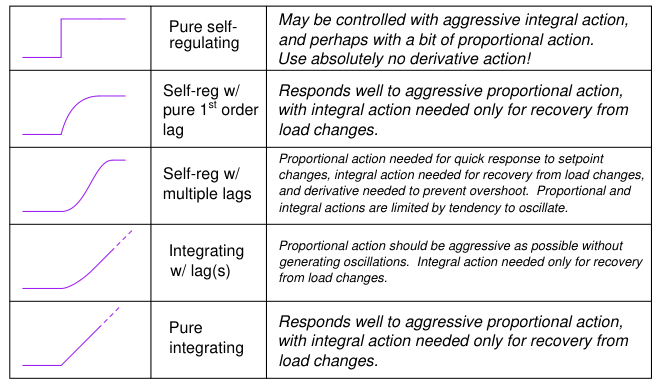
General rules:
34Recall that an open-loop response test consists of placing the loop controller in manual mode, introducing a step-change to the controller output (manipulated variable), and analyzing the time-domain response of the process variable as it reacts to that perturbation.
Once you have determined the basic character of the process, and understand from that characterization what the needs of the process will be regarding P, I, and/or D control actions, you may “experiment” with different tuning values of P, I, and D until you find a combination yielding robust control.
When performing heuristic tuning of a PID controller, it is important to be able to identify a condition where one or more of the “actions” (P, I, or D) is configured too aggressively for the process. The characteristic indication of over-tuning is the presence of sinusoidal oscillations. At best, this means damped oscillations following a sudden setpoint or load change. At worst, this means oscillations that never decay:
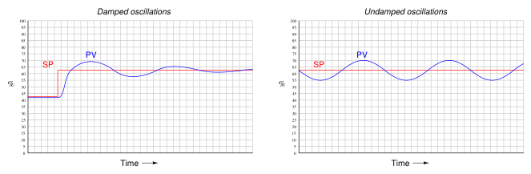
At this point, the question is: which action of the controller is causing this oscillation? We know all three actions (P, I, and D) are fully capable of causing process oscillation if set too aggressive, so in the lack of clarifying information it could be any of them (or some combination!). One clue is the trend of the controller’s output compared with the trend of the process variable (PV). Modern digital control systems all have the ability to trend manipulated variables as well as process variables, allowing personnel to monitor exactly how a loop controller is managing a process. If we compare the two trends, we may examine the phase shift between PV and output of a loop controller to discern what it’s dominant action is.
For example, the following trend graphs show the PV and output signals for a loop controller with proportional-dominant response. Both directand reverse-acting versions are shown:
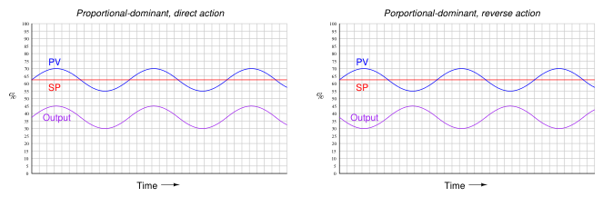
Since we know proportional action is immediate, there should be no phase shift35 between the PV and output waveforms. This makes sense from a mathematical perspective: if we substitute a sine function for the error variable in a proportional-only controller equation, we see that different gain values (Kp) simply result in an output signal of the same phase, just amplified or attenuated:
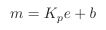
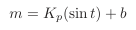
If ever you see a process oscillating like this (sinusoidal waveforms, with the PV and output signals in-phase), you know that the controller’s response to the process is dominated by proportional action, and that the gain needs to be reduced (i.e. increase proportional band) to achieve stability.
35For reverse-acting controllers, I am ignoring the obvious 180o phase shift necessary for negative feedback control when I say “no phase shift” between PV and output waveforms. I am also ignoring dead time resulting from the scanning of the PID algorithm in the digital controller. For some controllers, this scan time may be significant enough to see on a trend!
Integral and derivative actions, however, introduce phase shift between the PV waveform and the output waveform. The direction of phase shift will reveal which time-based action (either I or D) dominates the controller’s response and is therefore most likely the cause of oscillation. For example, the following trend graph shows the PV and output signals for a loop controller with integral-dominant response. Both directand reverse-acting versions are shown:
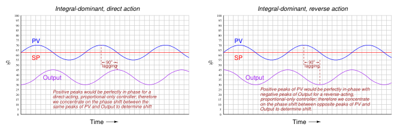
Here, the output waveform is phase-shifted 90o behind (lagging) the PV waveform compared to what it would be by proportional action alone. This −90o phase shift is most difficult to see for reverse-acting controllers, since the natural 180o phase shift caused by reverse action makes the additional −90o shift look like a +90o shift (i.e. a −270o shift). One method I use for discerning the direction of phase shift for reverse acting controllers is to imagine what the output waveform would look like for a proportional-only controller, and compare to that. Another method is to perform a “thought experiment” looking at the PV waveform, noting the velocity of the controller’s output at points of maximum error (when integral action would be expected to move the output signal fastest). In the previous example of an integral-dominant reverse-acting controller, we see that the output signal is indeed descending at its most rapid pace when the PV is highest above setpoint (greatest positive error), which is exactly what we would expect reverse-acting integration to do. Mathematically, this makes sense as well. Integration of a sine function results in a negative cosine waveform:
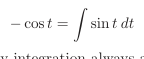
Another way of stating this is to say integration always adds a −90o phase shift:
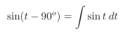
If derivative action is set too aggressive for the needs of the process, the resulting output waveform will be phase-shifted +90o from that of a purely proportional response:
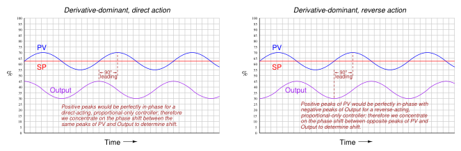
Once again, the direction of phase shift is easiest to discern in the direct-acting case, since we expect the PV and output sine waves to be perfectly in-phase for proportional-dominant response. A +90o phase shift is very clear to see in the direct-acting example because the peaks of the output waveform clearly precede the corresponding peaks of the PV waveform. The reverse-acting control example is more difficult due to the added 180o of phase shift intrinsic to reverse action. The derivative of a sine function is always a cosine function (or alternatively stated, a sine function with a +90o phase shift):
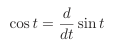
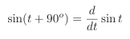
You may encounter cases where multiple PID terms are set too aggressively for the needs of the process, in which case the phase shift will be split somewhere between 0o and ± 90o owing to the combined actions. In such cases one must “round up” or “round down” the phase shift to the nearest value of −900, 0o, or +90o in order to determine which of the three actions (I, P, or D, respectively)
is most responsible for the oscillations.
An interesting case of over-tuning is when the process variable “porpoises36” on its way to setpoint following a step-change in setpoint. The following trend shows such a response:
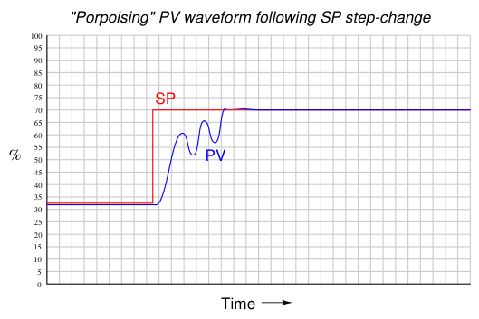
“Porpoising” is universally poor behavior for a loop, because it combines the negative consequences of over-tuning (instability and excessive valve travel) with the negative consequence of under-tuning (delay achieving setpoint). There is no practical purpose served by a loop “porpoising,” and so this behavior should be avoided if at all possible.
Thankfully, identifying the cause of “porpoising” is rather easy to do. Only two control actions are capable of causing this response: proportional and derivative. Integral action simply cannot cause porpoising. In order for the process variable to “porpoise,” the controller’s output signal must reverse direction before the process variable ever reaches setpoint. Integral action, however, will always drive the output in a consistent direction when the process variable is on one side of setpoint. Only proportional and derivative actions are capable of producing a directional change in the output signal prior to reaching setpoint. Solely examining the process variable waveform will not reveal whether it is proportional action, derivative action, or both responsible for the “porpoising” behavior. A trial reduction in the derivative37 tuning parameter is one way to identify the culprit, as is phase-shift analysis between the PV and output waveforms during the “porpoising” period.
36The term “porpoise” comes from the movements of a porpoise swimming rapidly toward the water’s surface as it chases along the bow of a moving ship. In order to generate speed, the animal undulates its body up and down to powerfully drive forward with its horizontal tail, tracing a sinusoidal path on its way up to breaching the surface of the water. 37You could try reducing the controller’s gain as a first step, but if the controller implements the Ideal or Series algorithm, reduction in gain will also reduce derivative action, which may mask an over-tuned derivative problem.